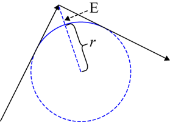

Figure: Corner Rounding by Position Tolerance
Figure: Corner Rounding by Position Tolerance

|
Figure Label |
Description |
|---|---|
|
r |
the radius of the arc |
|
E |
the position tolerance that is specified by the ROUNDING TOLERANCE command |
 2001-
2001-